account_balance
Практика банка
ИИ-решения в нашем банке
Реальные проекты банка: от речевой аналитики и документов до кредитов и взыскания
Речевая аналитика: качество обслуживания
Речевая аналитика · основной отчёт
1Масштаб анализа368 518 из 925 625 звонков
2Автоматическая оценкаБез ручного прослушивания
3Карточка звонкаСодержание, настроение, жалоба
Речевая аналитика: разбор звонка
Речевая аналитика · карточка звонка
1Запись с разделением ролейОператор и клиент отдельно
2Расшифровка с таймкодамиПо тексту можно искать
3Настроение, жалоба, темыИ краткое содержание разговора
4Оценка по критериямПриветствие, завершение, ожидание
Сверка документов филиалов с эталоном
Документооборот · сравнение файлов
1Сходство с эталоном99%, изменения на 1 из 15 страниц
2Изменена сумма кредита300 000 вместо 255 000 долларов
3Изменён срок12 месяцев вместо 36
4Назначение ответственногоРасхождение уходит на проверку
AI-метрики
Сверка документов: метрики
OCR
с августа 2026
descriptionДоговоров проверено ИИ
2 130
с запуска в августе · прогноз ≈4 000 к концу года
авгсеноктноядек
targetТочность сверки
99%
boltСкорость проверки
×2
personВручную30 мин
smart_toyС ИИ15 мин
scheduleЭкономия времени
200 ч
в месяц · 532 ч с августа
memoryАнализ одного договора
7–8 мин
OCR
Отчёты по льготным кредитам для Министерства экономики и финансов
Отчёты для Министерства экономики и финансов · реестр и карточка кредита
1Единый реестр кредитов5 007 кредитов загружаются из БД автоматически
2Контроль статусов и сроковНовые кредиты и кредиты с истекающим сроком
3Автозаполнение карточкиСотрудник вносит только KPI и заключение
4Отправка на согласованиеОтчёт передаётся руководителю в один клик
С запуска в июле 2026
Отчёты для Министерства экономики и финансов: результат
Что дала единая система за первые месяцы работы
task_alt3 850кредитов отчитано в Министерство экономики и финансов
все прошли через систему
bolt×4быстрее заполнение
15 минут на кредит вместо часа
schedule≈2 900 чрабочего времени сэкономлено
по 45 минут на каждом кредите
verified100%отчётов проверил руководитель
до отправки в Министерство экономики и финансов
Онлайн-декларация о конфликте интересов
HR-портал · декларации кандидатов
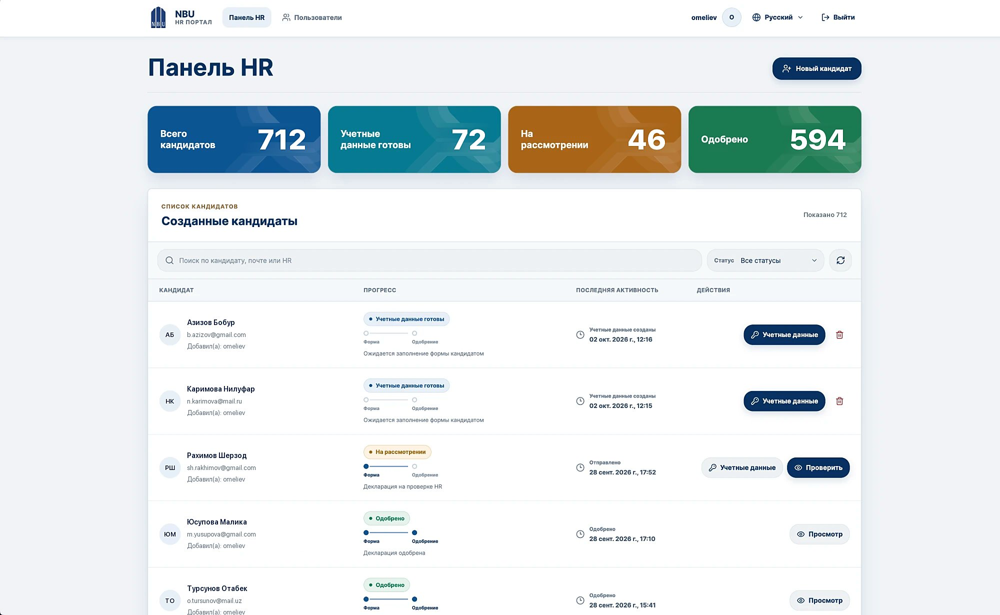
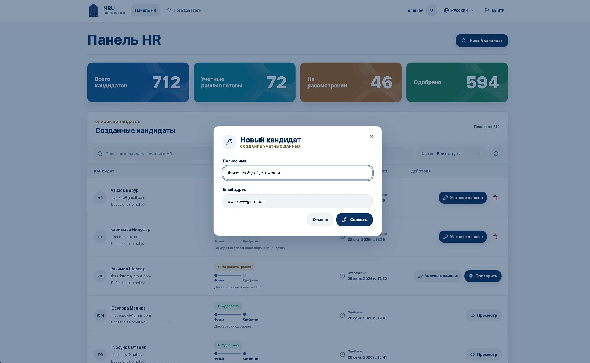
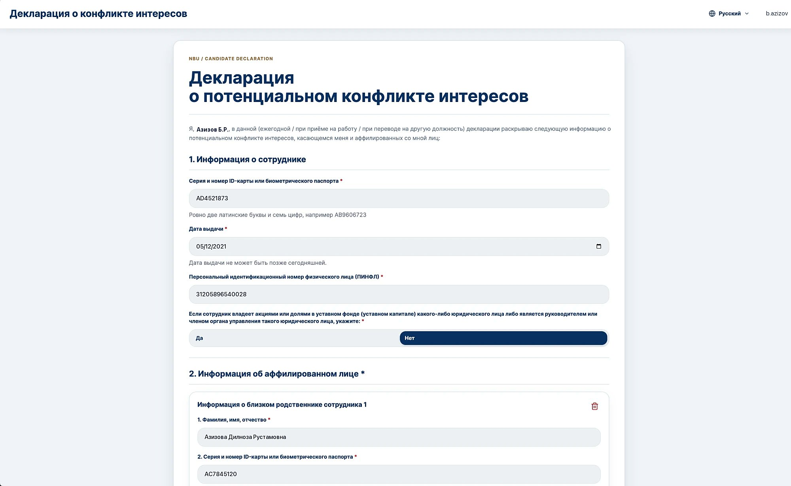
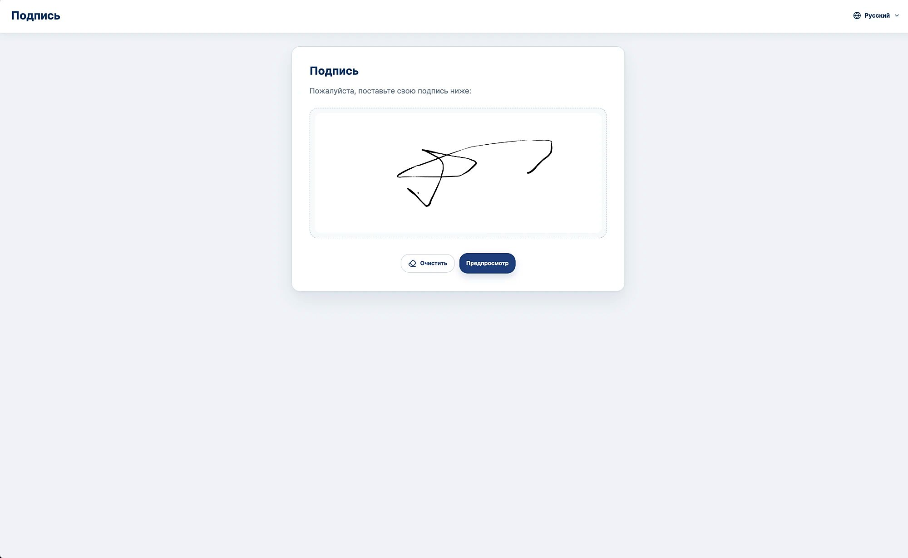
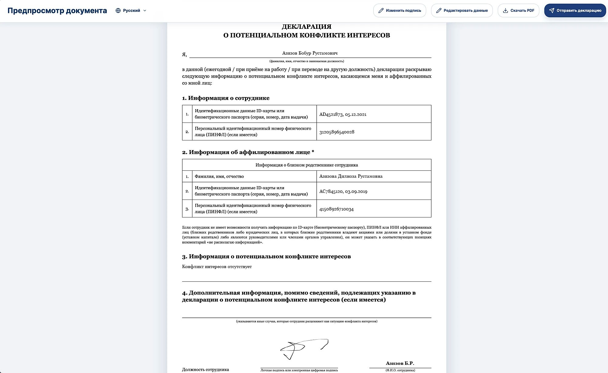
1Панель HRКандидаты и статусы в одном окне
2Новый кандидатДоступ создаётся автоматически
3Онлайн-декларацияКандидат заполняет форму сам
4Электронная подписьПодпись прямо на экране
5PDF и отправкаДокумент уходит в HR на проверку
С запуска в сентябре 2026
Онлайн-декларации кандидатов: результат
Декларация о конфликте интересов заполняется и подписывается кандидатом онлайн
assignment_turned_in640деклараций подано онлайн
кандидаты заполнили их самостоятельно
bolt×4быстрее обработка в HR
10 минут на кандидата вместо 40
schedule≈320 чрабочего времени HR сэкономлено
по 30 минут на каждом кандидате
draw100%с электронной подписью
PDF сразу в архиве, без бумажных бланков
Платформа подготовки бизнес-планов
Бизнес-план · пошаговая анкета
Бизнес-планы: результат
От анкеты предпринимателя до готового бизнес-плана
меньше времени
на подготовку
одного бизнес-плана
×6
быстрее подготовка
20 минут на план вместо 2 часов
Время на один план
0306090120 мин
Поздравление клиентов: календарь дней рождения
Поздравление клиентов · календарь
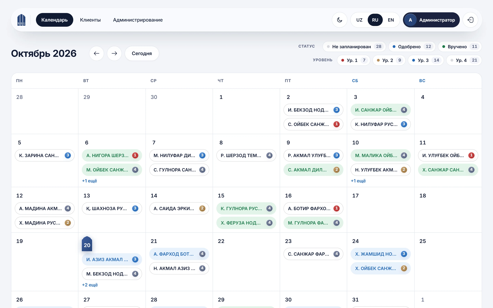
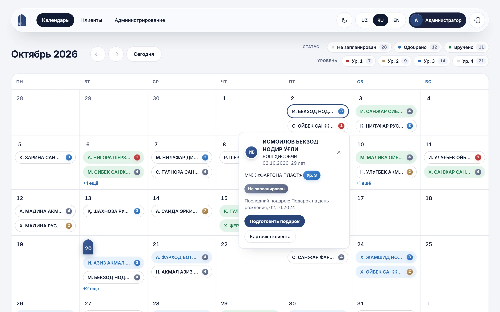
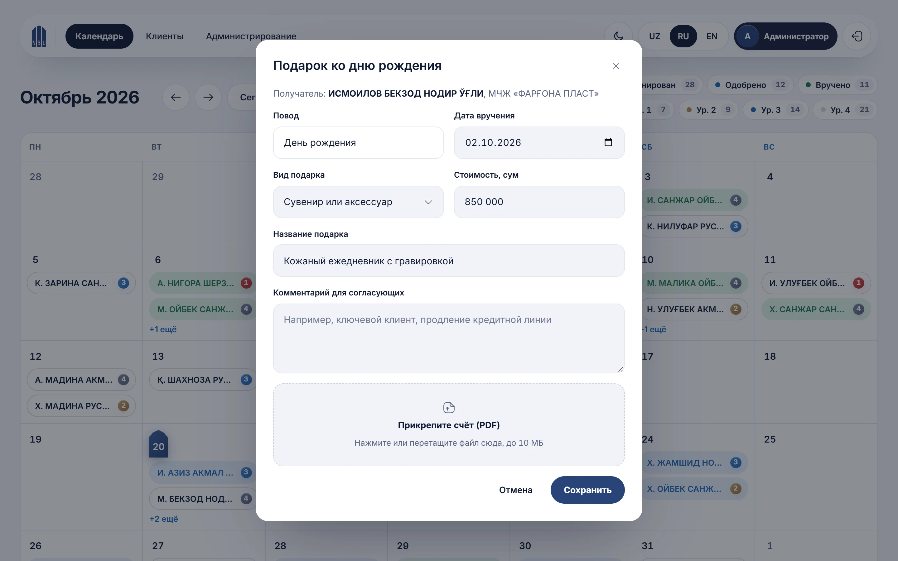
1Дни рождения месяца
Цвет статуса и уровень важности
2Действия из календаря
История и следующий шаг
3Оформление подарка
Одна форма, одобрение сразу
Поздравление клиентов: от карточки до реестра
Поздравление клиентов · клиенты
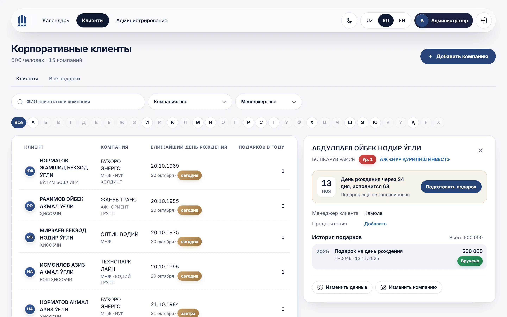
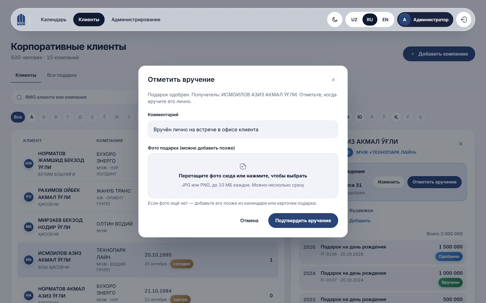
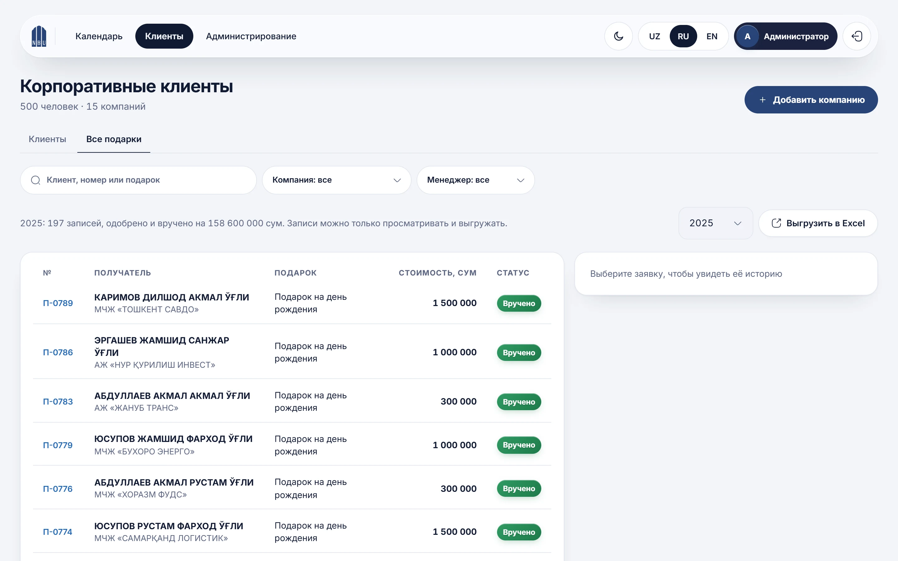
1Карточка клиента
Дата, уровень, история подарков
2Вручение с фото
Комментарий и фото к вручению
3Реестр подарков
Подарки года, суммы и статусы
По данным системы на 20.10.2026
Поздравление клиентов: результат
Дни рождения, подарки и вручения клиентов ведутся в одной системе
cake500клиентов в одном календаре
учредители и директора 15 компаний
bolt×2меньше шагов до вручения
2 шага вместо 4, без этапа согласования
redeem4 годаистории подарков в одной базе
791 подарок на 654,9 млн сум
verified100%действий в журнале
оформление, правка и вручение с автором
Ежемесячный процесс
Утверждение функциональных ролей KPI
Каждый месяц 131 филиал подтверждает, кто из сотрудников продажник, транзакционист и кассир. По этим ролям считается KPI
1Список из кадровой системыСотрудники филиала подгружаются из SAP HCM — вручную никого не вносят
2Бухгалтер выставляет ролиВыбор ограничен ролями, которые бывают в его отделе
3Три подписи по цепочкеУправляющий, территориальный директор, приём в ДООиП
4Выгрузка в витринуПринятый отчёт уходит в базу, по которой считается KPI
Рабочий экран ДООиП · ход сдачи по месяцам
Первый месяц работы, август 2026
Роли KPI: результат
Единый процесс для всей сети вместо Excel-файлов по почте
scheduleминутывместо нескольких дней на отчёт филиала
сбор, подписи и выгрузка — в одной системе
contacts1 223сотрудника с ролями
выставлены, подписаны и приняты
account_balance131филиал в системе
67 отчётов принято за август
database100%данных ушло в витрину
без ручного переноса и сверки
Реверсивный факторинг
Факторинг: скоринг и лимиты
Платформа собирает данные клиента в банке, оценивает риск и рассчитывает лимит. Решение принимает сотрудник
databaseШаг 1
Данные в одной карточке
Обороты по счетам, кредитный портфель, валютные контракты и санкционные списки
199 769юрлиц доступны для оценки
arrow_forward
analyticsШаг 2
Скоринг A–D
Грейд по оборотам и кредитной истории, стоп-факторы проверяются автоматически
4 305юрлиц с грейдом D: стоп-факторы или высокий риск
arrow_forward
task_altШаг 3
Лимит и решение по сделке
Лимит, срок и аванс дебитора; по сделке — страна, санкции и поставщик
30 135юрлиц с рекомендованным лимитом
Раздел «Риски»
Риски: дебитор и поставщик в паре
Хорошего дебитора мало: важно, с кем он работает. Поэтому каждую сделку оцениваем с двух сторон
storefrontДебитор · покупатель
Сможет ли вернуть деньги банку?
Хватит ли его поступлений, чтобы погасить сумму в срок отсрочки
Грейд A–DСвободный лимитСумма к возврату / поступления
sync_alt
local_shippingПоставщик · продавец
Сможет ли поставить товар?
Реальная ли компания и соразмерен ли договор её обороту
История сделокДоговор / оборотСтранаСанкцииКруговая схема
arrow_forward
handshakeПара · итог
Сколько платить сразу?
Чем надёжнее пара, тем больше банк платит поставщику сразу; остаток — после оплаты дебитором
0из 221
проблемных сделок там, где система платила бы поставщику 100% сразу
100%0%
85–99%2,4%
70–84%17,9%
Проверено на истории проекта
Факторинг: результат
Скоринг проверен на 666 сделках факторинга за 01.2025–09.2026
verified0,9%проблемных сделок у дебиторов грейда A
policy35 181санкционная запись OFAC и ЕС
сверка каждого поставщика по названию и стране
public15 110иностранных поставщиков с историей
по 29 148 валютным контрактам банка
boltсекундына расчёт лимита и сделки
с пошаговым расчётом и причинами решения
Soft collection · pre-collection
Pre-collection: связаться до просрочки
За 5 дней до платежа модель оценивает риск срыва по каждому кредиту и ставит рискованных клиентов первыми в очередь на контакт
notifications_active
event
flag
−5 днейпрогноз и контакт
День платежапо графику
+10 днейбыл ли выход в просрочку
databaseШаг 1
Профиль заёмщика
История платежей по кредиту, кредитное бюро КАТМ и активность по картам
≈500 тыс.кредитов в истории обучения
arrow_forward
insightsШаг 2
Оценка риска срыва
Модель считает вероятность выйти в просрочку по ближайшему платежу
0–100%скор риска по каждому кредиту
arrow_forward
support_agentШаг 3
Очередь на контакт
Самые рискованные — первыми: напоминание до того, как платёж пропущен
Колл-центрSMSРобот-обзвон
Проверено на отложенном месяце
Pre-collection: результат
Модель обучена на платежах до апреля 2026 и проверена на 181 902 платежах мая, которых не видела
target97%точность в топ-10% списка — почти каждый звонок по делу
Топ-10%97%
Топ-30%96%
Без модели73%
radar84%будущих просрочек видим заранее
за 5 дней до даты платежа
verified92%точность прогноза
из отмеченных «сорвётся» — реально вышли в просрочку
query_stats0,89ROC-AUC на новом месяце
качество ранжирования на данных вне обучения
Soft collection · 1–60 дней просрочки
Soft collection: кто заплатит сам, а кому нужен звонок
В первый день просрочки модель прогнозирует, как долго клиент будет в просрочке, и помогает распределить усилия взыскания
День 1 просрочки · прогноз
check_circle1–30 дней
schedule31–60 дней
warningБольше 60 дней
закроет долг сам или после напоминаниянужен активный контактзатяжная просрочка: работать сразу, плотно
databaseШаг 1
Профиль просрочки
Весь кредитный портфель клиента, история просрочек в бюро КАТМ и обороты по картам
≈3,7 млнслучаев просрочки в истории
arrow_forward
insightsШаг 2
Прогноз корзины
Модель оценивает вероятность каждой из трёх корзин по сроку выхода из просрочки
до 30 дней31–6060+
arrow_forward
support_agentШаг 3
Канал по риску
Кто заплатит сам — мягкое напоминание; риск затяжной просрочки — оператор с первого дня
SMSIVRРоботОператор
Проверено на 2026 годе
Soft collection: результат
Модель обучена на просрочках 2025 года и проверена на 406 305 случаях просрочки 2026 года, которых не видела
crisis_alert×14чаще затяжные просрочки в группе риска модели, чем в среднем
Группа риска26%
Весь поток1,8%
radar1/3затяжных просрочек видим в первый день
до того, как долг ушёл за 60 дней
query_stats0,82ROC-AUC по риску 60+
качество ранжирования на данных вне обучения
sms99%тех, кто закрыл долг сам, — на мягкий канал
SMS и IVR вместо оператора: операторы на сложных